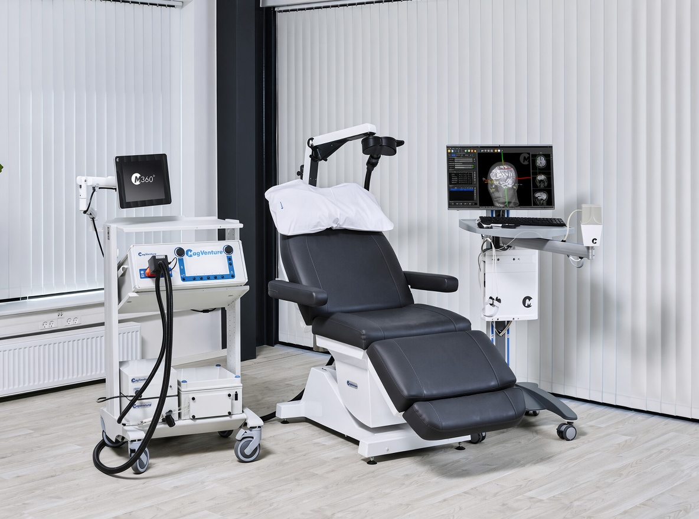

歡迎來到
我們致力以專業照護，提供高質素和以實證為本的 TMS 治療

腦磁激（TMS）是一種非侵入性治療方式，透過磁刺激線圈向大腦的特定區域傳遞磁脈衝。我們使用的設備已獲得美國食品藥物管理局（FDA）核准及歐盟（CE）認可，並已在臨床上應用超過 20 年，包括香港醫院管理局轄下的醫院。
TMS 治療僅限於由醫生轉介。治療會以一系列的方式進行，具體的療程次數及時間安排由主診醫生決定。詳情請參閱下方「服務」。
臨床評估及治療決定經由主診醫生負責。
• 非侵入性：無需麻醉；患者在整個療程中保持清醒
• 無需恢復期：每次治療後便可進行日常活動
部分人士可能會出現輕微且短暫的反應，例如：
• 面部肌肉抽動
• 頭皮感到不適
• 頭痛
• 頭暈
在按照既定安全指引進行治療，癲癇發作屬罕見副作用。
一般療程包含 30 次治療，每次治療約需 15 至 30 分鐘。確切的治療次數將由主診醫生決定。
經臨床評估合適者，可按醫生制定的治療計劃，於同一天進行多次治療。
如醫生建議，可安排額外的加強或維持治療。
我們於新都專科醫療中心提供 TMS 治療服務。
我們使用 MagVenture TMS 儀器，此機型亦獲醫院管理局轄下醫院採用。我們同時使用 Atlas 神經導航系統，以輔助線圈定位。
首次治療會由精神科醫生把關評估。醫生會審視病人的病歷（包括藥物、癲癇病史及體內有否金屬植入物等），以確認是否適合接受治療，並制定個人化的治療方案。
簡教授
創辦人
簡教授為神經科學家，擁有逾20年腦磁激（TMS）相關研究及臨床經驗。他早年於奧地利深耕腦磁激相關研究，並建立扎實的學術基礎，其後移居香港，於大學環境中持續從事腦磁激研究及教學工作，並將研究成果應用於臨床實踐。憑藉在學術及臨床兩方面的經驗，簡教授創立「康然腦健有限公司」，致力將實證為本的腦磁激研究成果，轉化為貼合本地患者需要的臨床服務。
鄧先生
腦磁激專家
鄧先生是持有認證資格的腦磁激（TMS）治療師。他曾接受TMS操作的正規培訓，並在簡教授的指導下累積了多年進行TMS治療的臨床經驗。他負責依照既定的治療方案操作TMS儀器，以及在治療期間監察患者狀況。